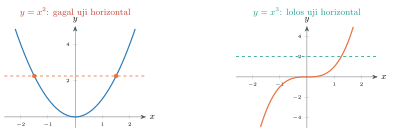
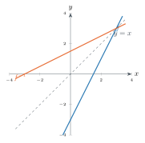

Matematika I • Teknik Sipil
Aljabar Fungsi • Komposisi • Penguraian • Fungsi Satu-Satu • Invers
Mohammad Jamhuri · Universitas Islam Negeri Maulana Malik Ibrahim Malang
Setelah pertemuan ini, Anda mampu:
Rujukan: Buku, Bab 6.
Sebelum lanjut, cek dulu bekal dari minggu lalu:
Minggu lalu kita mengenali fungsi sebagai objek tunggal: rumus, domain, grafiknya.
$f(x)=\sqrt{x}$ dengan $\mathrm{Dom}(f)=[0,\infty)$, dan $g(x)=x-4$ dengan $\mathrm{Dom}(g)=\mathbb{R}$.
Dibaca "$f$ bundaran $g$": yang dikerjakan lebih dulu adalah $g$, meski $f$ ditulis lebih dulu.
dua mesin bersusun: $x\to g\to f$
Untuk $f(x)=x^2$ dan $g(x)=x+3$:
$$(f\circ g)(x)=(x+3)^2 \qquad\text{sedangkan}\qquad (g\circ f)(x)=x^2+3$$Keduanya bahkan tidak sama sebagai polinomial — komposisi umumnya tidak komutatif.
$f(x)=x^2+1$, $g(x)=\sqrt{x-2}$. Maka
$$(f\circ g)(x)=\bigl(\sqrt{x-2}\bigr)^2+1=x-1$$Kebalikan dari komposisi: pecah $h=f\circ g$. Pilih $g$ sebagai bagian dalam (dihitung lebih dulu), $f$ sebagai operasi terakhir.
| $h(x)$ | $g(x)$ (dalam) | $f(u)$ (luar) |
|---|---|---|
| $\sqrt{3x+1}$ | $3x+1$ | $\sqrt{u}$ |
| $(2x+5)^{10}$ | $2x+5$ | $u^{10}$ |
| $\sin(x^3)$ | $x^3$ | $\sin u$ |

Uji garis horizontal: $f$ satu-satu jika dan hanya jika setiap garis mendatar memotong grafiknya paling banyak satu kali.
Sifat: $f^{-1}(f(x))=x$, $\ f(f^{-1}(y))=y$, $\ \mathrm{Dom}(f^{-1})=\mathrm{Ran}(f)$.

grafik $f^{-1}$: cermin grafik $f$ terhadap $y=x$
Di hidrologi, debit sungai $Q$ pada suatu penampang dinyatakan sebagai fungsi tinggi muka air $h$: $Q=f(h)$, disebut kurva pengaliran (rating curve), diperoleh lewat kalibrasi lapangan.
Hubungan ini terjamin dapat dibalik karena kurva pengaliran pada rentang normal bersifat naik tegas, sehingga otomatis satu-satu.
Fungsi manakah yang tidak mempunyai invers pada seluruh $\mathbb{R}$?
Dr. Mohammad Jamhuri · UIN Maulana Malik Ibrahim Malang